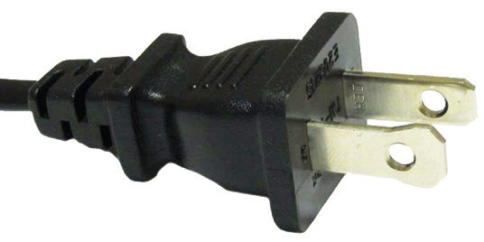
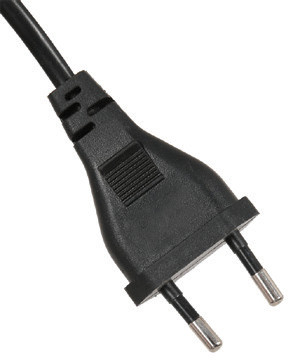
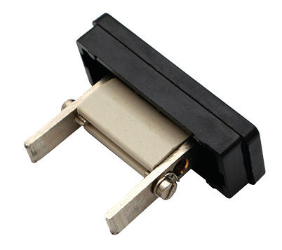
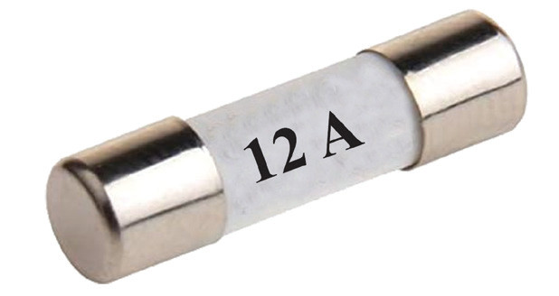

A fuse is connected to the live cable to ensure that if it blows, the appliance’s body is cut off from the live electrical connection, preventing potential danger to users. The earth pin on the plug is generally longer than the other two pins, enabling it to open the safety shutter to the terminals of the socket. It also ensures an appliance is earthed before being connected to a power source. When connecting a three-pin plug, the colour code must be strictly adhered to avoid an electric shock. The switch must be OFF when pushing the plug into the socket. The two-pin plug does not have a fuse or an earth pin. Thus, an appliance using a two-pin plug does not have its body connected to the earth. Figure 2.42 shows a two-pin plug. The connections for this plug follow the same colour code as the three-pin plug.


A fuse and a circuit breaker
When an electric current exceeds the rated value of an electrical appliance, it causes damage to the device. To protect an appliance against this damage, a fuse or a circuit breaker is used. A fuse consists of an element, usually a piece of copper or tin-lead alloy wire, that melts when current exceeds a predetermined value. The element is contained in a suitable casing and placed in series with the circuit to be protected.
Fuses are categorised into two types; rewirable fuses and cartridge fuses. In rewireable fuse, the fuse element is carried in a removable fuse link that is. made of porcelain or other suitable insulating material. This ensures no danger to an operator when removing the fuse link. Figure 2.43 shows a rewirable fuse.

Cartridge fuses consist of a porcelain tube with metal end caps attached to the fuse element. Figure 2.44 shows a cartridge fuse.

Action of a fuse
Blowing (melting) of a fuse occurs when a circuit is overloaded or a short circuit occurs. A short-circuit fault is an unwanted connection allowing current to flow along a path not part of a circuit design. The new path might re-route